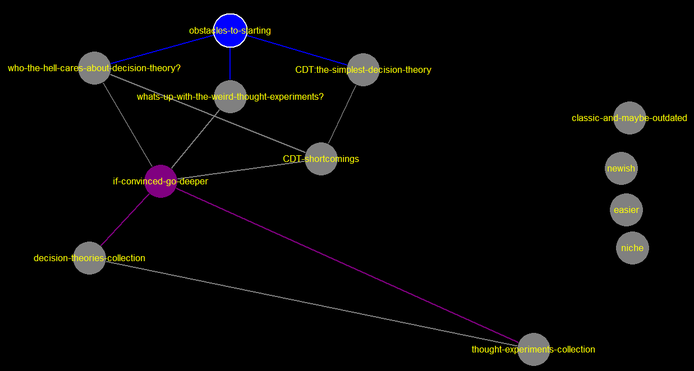

obstacles-to-starting
[[who-the-hell-cares-about-decision-theory?-->who-the-hell-cares-about-decision-theory?]] [[whats-up-with-the-weird-thought-experiments?-->whats-up-with-the-weird-thought-experiments?]] [[simplest-decision-theory-->CDT:the-simplest-decision-theory]]
CDT-shortcomings
[[if-convinced-->if-convinced-go-deeper]]
CDT:the-simplest-decision-theory
[[problems-->CDT-shortcomings]]
easier
newish
classic-and-maybe-outdated
if-convinced-go-deeper
[[thought-experiments-collection-->thought-experiments-collection]] [[decision-theories-collection-->decision-theories-collection]]
decision-theories-collection
[[thought-experiments-collection-->thought-experiments-collection]]
niche
thought-experiments-collection
whats-up-with-the-weird-thought-experiments?
[[if-convinced-->if-convinced-go-deeper]]
who-the-hell-cares-about-decision-theory?
https://www.lesswrong.com/posts/af9MjBqF2hgu3EN6r/decision-theories-a-less-wrong-primer [[if-convinced-->if-convinced-go-deeper]] [[its-problems-->CDT-shortcomings]]
css [stylesheet]